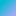

<!doctype html>
<html lang="en">
    <head>
        <meta charset="utf-8">
        <meta http-equiv="X-UA-Compatible" content="IE=edge">
        <meta name="viewport" content="initial-scale=1,user-scalable=no,maximum-scale=1,width=device-width">
        <meta name="mobile-web-app-capable" content="yes">
        <meta name="apple-mobile-web-app-capable" content="yes">
        <link rel="stylesheet" href="css/leaflet.css">
        <link rel="stylesheet" href="css/qgis2web.css"><link rel="stylesheet" href="css/fontawesome-all.min.css">
        <link rel="stylesheet" href="css/leaflet-search.css">
        <link rel="stylesheet" href="css/leaflet-measure.css">
        <style>
        html, body, #map {
            width: 100%;
            height: 100%;
            padding: 0;
            margin: 0;
        }
        </style>
        <title></title>
    </head>
    <body>
        <div id="map">
        </div>
        <script src="js/qgis2web_expressions.js"></script>
        <script src="js/leaflet.js"></script>
        <script src="js/leaflet.rotatedMarker.js"></script>
        <script src="js/leaflet.pattern.js"></script>
        <script src="js/leaflet-hash.js"></script>
        <script src="js/Autolinker.min.js"></script>
        <script src="js/rbush.min.js"></script>
        <script src="js/labelgun.min.js"></script>
        <script src="js/labels.js"></script>
        <script src="js/leaflet-measure.js"></script>
        <script src="js/leaflet-search.js"></script>
        <script src="data/Lakes_1.js"></script>
        <script>
        var highlightLayer;
        function highlightFeature(e) {
            highlightLayer = e.target;
            highlightLayer.openPopup();
        }
        var map = L.map('map', {
            zoomControl:true, maxZoom:28, minZoom:1
        }).fitBounds([[12.88326795100646,79.65153793924655],[13.337735896149738,80.39445390671547]]);
        var hash = new L.Hash(map);
        map.attributionControl.setPrefix('<a href="https://github.com/tomchadwin/qgis2web" target="_blank">qgis2web</a> &middot; <a href="https://leafletjs.com" title="A JS library for interactive maps">Leaflet</a> &middot; <a href="https://qgis.org">QGIS</a>');
        var autolinker = new Autolinker({truncate: {length: 30, location: 'smart'}});
        var measureControl = new L.Control.Measure({
            position: 'topleft',
            primaryLengthUnit: 'feet',
            secondaryLengthUnit: 'miles',
            primaryAreaUnit: 'sqfeet',
            secondaryAreaUnit: 'sqmiles'
        });
        measureControl.addTo(map);
        document.getElementsByClassName('leaflet-control-measure-toggle')[0]
        .innerHTML = '';
        document.getElementsByClassName('leaflet-control-measure-toggle')[0]
        .className += ' fas fa-ruler';
        var bounds_group = new L.featureGroup([]);
        function setBounds() {
        }
        map.createPane('pane_GoogleMaps_0');
        map.getPane('pane_GoogleMaps_0').style.zIndex = 400;
        var layer_GoogleMaps_0 = L.tileLayer('https://mt1.google.com/vt/lyrs=m&x={x}&y={y}&z={z}', {
            pane: 'pane_GoogleMaps_0',
            opacity: 1.0,
            attribution: '',
            minZoom: 1,
            maxZoom: 28,
        });
        layer_GoogleMaps_0;
        map.addLayer(layer_GoogleMaps_0);
        function pop_Lakes_1(feature, layer) {
            layer.on({
                mouseout: function(e) {
                    if (typeof layer.closePopup == 'function') {
                        layer.closePopup();
                    } else {
                        layer.eachLayer(function(feature){
                            feature.closePopup()
                        });
                    }
                },
                mouseover: highlightFeature,
            });
            var popupContent = '<table>\
                    <tr>\
                        <th scope="row">Lake</th>\
                        <td>' + (feature.properties['Lake'] !== null ? autolinker.link(feature.properties['Lake'].toLocaleString()) : '') + '</td>\
                    </tr>\
                    <tr>\
                        <th scope="row">Ftanklevel</th>\
                        <td>' + (feature.properties['Ftanklevel'] !== null ? autolinker.link(feature.properties['Ftanklevel'].toLocaleString()) : '') + '</td>\
                    </tr>\
                    <tr>\
                        <th scope="row">fullcapac</th>\
                        <td>' + (feature.properties['fullcapac'] !== null ? autolinker.link(feature.properties['fullcapac'].toLocaleString()) : '') + '</td>\
                    </tr>\
                    <tr>\
                        <th scope="row">level</th>\
                        <td>' + (feature.properties['level'] !== null ? autolinker.link(feature.properties['level'].toLocaleString()) : '') + '</td>\
                    </tr>\
                    <tr>\
                        <th scope="row">storage</th>\
                        <td>' + (feature.properties['storage'] !== null ? autolinker.link(feature.properties['storage'].toLocaleString()) : '') + '</td>\
                    </tr>\
                    <tr>\
                        <th scope="row">rainfall</th>\
                        <td>' + (feature.properties['rainfall'] !== null ? autolinker.link(feature.properties['rainfall'].toLocaleString()) : '') + '</td>\
                    </tr>\
                    <tr>\
                        <th scope="row">PYS</th>\
                        <td>' + (feature.properties['PYS'] !== null ? autolinker.link(feature.properties['PYS'].toLocaleString()) : '') + '</td>\
                    </tr>\
                </table>';
            layer.bindPopup(popupContent, {maxHeight: 400});
        }

        function style_Lakes_1_0() {
            return {
                pane: 'pane_Lakes_1',
                interactive: true,
            }
        }
        map.createPane('pane_Lakes_1');
        map.getPane('pane_Lakes_1').style.zIndex = 401;
        map.getPane('pane_Lakes_1').style['mix-blend-mode'] = 'normal';
        var layer_Lakes_1 = new L.geoJson(json_Lakes_1, {
            attribution: '',
            interactive: true,
            dataVar: 'json_Lakes_1',
            layerName: 'layer_Lakes_1',
            pane: 'pane_Lakes_1',
            onEachFeature: pop_Lakes_1,
            style: style_Lakes_1_0,
        });
        bounds_group.addLayer(layer_Lakes_1);
        map.addLayer(layer_Lakes_1);
        var baseMaps = {};
        L.control.layers(baseMaps,{' Lakes': layer_Lakes_1,"Google Maps": layer_GoogleMaps_0,}).addTo(map);
        setBounds();
        map.addControl(new L.Control.Search({
            layer: layer_Lakes_1,
            initial: false,
            hideMarkerOnCollapse: true,
            propertyName: 'Lake'}));
        document.getElementsByClassName('search-button')[0].className +=
         ' fa fa-binoculars';
        </script>
    </body>
</html>
